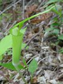

自分で理想を立てて、思うようにできないことが悩みの種？これ（自身）は元々理想を持たない天然素材。
▼生きる
キンランは低地や丘陵地の雑木林の中に生える無毛の多年草。茎は直立し、高さ40～60cm。葉は10枚内外で、2列に互生し、長だ円形で先端はとがり、基部は茎を抱く。縦にしわがある。茎の頂上に総状花序をつけ、3～12個の花を開く。がくも花弁も黄色、半開に終わる。がく片は卵状長だ円形の鈍頭で、基部はせまい。側花弁はがく片より少し短い。『時を経てキンラン出会う大谷川』
▼望む
ミヤマカタバミは山地の木陰に生える多年草。根茎は横にのび、枯れ残った葉柄基部に包まれる。葉は根生し長さ5～15cmの柄があり、3枚の小葉からなる。小葉は広倒心形で両縁はややとがった円形。葉柄、花柄は毛がまばらにある。花を1個つける。『木陰から深山カタバミ望む空』
▼山吹
ヤマブキは山地の崖の上などに多く生える落葉低木でそう生する。茎は細く緑色。葉は有柄で互生し、卵形、長さ3～7cm、幅2～3.5cm、先端は長くとがり、ふちには重鋸歯がある。小枝の先に花茎が3～5cmで5弁の黄花を1個ずつ開く。ヤエヤマブキは実を付けない。『時の中只山吹や咲き出る』
▼照緑
シロヤマブキは本州中国地方の山地に自生もあるが、庭に植えられている落葉低木。葉は対生し、短い葉柄があり、卵形で長さ4～6cm、幅2～4cm、表面にしわが多く、ふちには鋭い重鋸歯がある。新枝の先に径3～4cmの白色4弁の花を1個ずつ開く。果実はふつう1花に4個つき、黒色。『先急ぐ歩み止めたシロヤマブキ』
▼遅い春
ゴールデンウィークとは言え、針葉樹林の生える山では早春の頃。ヒメイチゲの総苞葉は３枚輪生し、それぞれ３枚の皮針形の小葉のからなる三出複葉。名前のとおり小さ目の花は、沼原に訪れる人目には留まらないようだ。『沼原で霧風伏せしヒメイチゲ』
▼ホオ
ホオノキは山地に生える高さ20～30mになる落葉高木。樹皮は灰白色。葉は大型で枝先に集まってつき、有柄で互生、倒卵状長だ円形、長さ20～40cm、先端は短く突き出し、質はやや厚くかたく、裏面は白っぽく細毛があり、全縁である。開葉後、枝先に大型でかおりのある花を開く。花は直径13～15cmあり、黄色をおびた白色。花弁は狭倒卵形で約9枚。おしべ、めしべともに多数。果実は長だ円形で長さ10～15cm、10月～11月に成熟し紅紫色となり袋果は多数で開裂、2個の赤色の種子を出し、白色の糸でたれさがる。材は灰緑色で木目がめだたず、やわらかいが均質でくるいが少ないので、指物、箱物、漆器の木地、版木に使われ、木炭は漆器の中とぎに使われる。樹皮は『和厚朴』と言われ、薬用に使われる。葉は古くは食物などを包むのに用いられ、現在でも飛騨高山の包葉みそはよく知られている。『遠方で大きく開くホオの花』▼薫夏
キエビネは暖地の林の下に生える多年草。葉は2～3枚で越年生で冬は地に伏している。倒皮針状長だ円形で草質で縦にしわがあり、基部は細まり柄となる。エビネに比べやや大きく、花が鮮黄色で径が約3cmあり唇弁の先が2裂していない。『照る日差し木陰キエビネ薫夏』
▼ものが教えてくれている
ハルリンドウは山野の日当たりのよい、やや湿ったところに生える平滑無毛の2年草。基部に大形の葉が2～3対あり、卵形で葉柄がなく、先はとがる。茎は高さ5～15cm、基部から数本が株立ちする。茎には卵状披針形の小さな葉が2～3枚まばらに対生する。
花は青紫色で枝の先端に1個ずつ上を向いて開く。自分の考えが入る以前の様子に気付かない事には、考え方をわずかに考え方で整理する繰り返しです。考え方をはさまないからこそ、わかることがあるんですから、真実は小説よりも…。
『草千里ハルリンドウの花畑』
▼暑がり
コケリンドウは日当たりのよい野原の草地や海岸近くのシバ原などに生える２年草。茎は根もと近くから多数の枝を分け、葉は対生し、根もと近くの2～3枚は特に大きく、ロゼット状をなして十字形に地面に広がる。『土手に立ち水田臨むコケリンドウ』
▼立ち尽くす
タニギキョウは山地の湿った樹林内に生える小さな多年草。高さ8～15cm。葉は互生し、1cmほどの葉柄があり、卵円形～広卵形で、上部の葉腋から細長い花柄を出し、その先端に1個の鐘形の花が咲く。『森の中そっと立ち尽くすタニギキョウ』
▼知っている
ヤエムグラその名や草の形は知っていても、小さく黄緑の花の色や形は気づきにくい。全身に下向きの刺があり、他の植物に捕まり立ちするように丈を伸ばす。かわいい小さな毛玉の実を付ける。知っていると言ってもこのくらいのことです。『ヤエムグラ捕まり立ちて繁茂する』
▼あちこちに
オニグルミは山野に生える落葉高木。葉は大型の奇数羽状複葉で互生。小葉は9～21個、卵状長楕円形、長さ7～12cm、幅4～5cm、両面や中軸に腺毛が密生する。雌雄同株。材は上等の家具材や鏡の台尻に使われる。『あちこちに追えば咲きたるオニグルミ』
▼萌
ミズキは山野の林下や谷間などにはえる高さ2～3mの落葉低木。葉は互生、よくのびた枝では同じ側に2枚ずつ続いて出る（コクサギ型葉序）。だ円形～倒卵形で、長さ6～14cm、幅3～7cm、先端はとがる。葉質はうすく、葉面に透明な細点が多数あり、全縁。雌雄異株。前年の枝に小さな穂状花序をつくり、黄緑色の小花を開く。果実は4つに分かれて、10～11月に黄かっ色に熟す。葉や茎に一種の臭いがあるが、これを煎じて家畜のシラミをとった。有毒成分が含まれる。山間地の田の近くに生えることから、夏に刈り取って田に入れ、くさらせて肥料として使った。『水田にミズキ映して花冷えし』
▼考え方でない様子
ハリエンジュは別名ニセアカシアと呼ばれる落葉高木。葉の付根に1対のとげがある。葉は互生し、奇数羽状複葉で、小葉は9～19枚、卵形～長だ円形、質はややうすく、全縁または上部に細きょ歯がある。5～6月に葉のわきから総状花序を出し、白色のちょう形花が垂れ下がって開く。かおりがある。北アメリカ原産。密源植物として利用される。緑化や治山用に植えられる。花を見つけたと言うのは跡形を考えで話しただけです。眼にしてみれば、ただ見えただけの様子です。鼻で甘い匂いを嗅げば、甘いと思わなくても甘い。こんな時には、満足とも好きとも思わない。不平も出てこない。素晴らしく堂々とした様子です。
▼キラキラ
トチノキは山地の谷間などに生える落葉高木。葉は対生、大きな掌状複葉で小葉は5～7枚、長倒卵形で先は急にとがり、ふちにはにぶい重きょ歯がある。5～6月、若枝の先に大型の円すい花序を直立し、多数の花を密につける。花は白色でやや紅色をおび、直径1.4～1.6cmある。両性花と雄花があり香る。果実はさく果で倒卵形、とげがない。9～10月に3裂し、へん球形でつやのある紫かっ色の種子を出す。皮は厚くすぐに乾燥して皮の内側に小さな硬い粒が付いていてパックリ皮が割けてしまう。果実でトチモチを作り、山村で食用にされた。材はやわらかく均質で、さまざまなものに使われる。幹はくり貫いて臼を作れるほど大木になる。冬芽は樹脂に包まれ日差しにキラキラ輝く。マロニエ（セイヨウトチノキ）はヨーロッパ原産。果実にとげがある。街路樹として植えられることがある。 『キラキラと頭上輝く栃の花』
▼道草
ノイバラは山野、川岸などに生える落葉低木。枝にはとげがある。葉は互生、1～4対の小葉をもった奇数羽状複葉、小葉はだ円～広卵形、長さ2～4cm、下面に細毛が生え、ふちにはきょ歯があり、光沢はない。枝の先に円すい花序を出し、花茎が2～3cmある白色5弁の花を多数つけ濃い芳香を放つ。果実は利尿剤に使われる。花弁がピンクがかったツクシノイバラは、やや花も大きく葉の形など良く見ると微妙に違う。野道を歩いて落ち着いた気分になった。これって道草？『ノイバラの香りに惹かれ野道草』
▼青は青、藍は藍
キリは落葉高木。葉は長い柄があり、対生、大型の広卵形で、長さ・幅とも20～45cmあり、基部は心臓形で先はとがり、全縁または3～5裂する。枝先に大型の円すい花序をだし、紫色の花を多数開く。花冠は筒形で大きく、先は5裂し、内面に黄色のすじがある。果実は広卵形で長さ3～4cmあり、10～11月にかっ色に熟す。成長が早く広く栽培される。材は軽く、やわらかく、家具用として最高級である。『落ち花で見上げしキリと青い空』
▼鶴田沼
宇都宮鶴田沼の湿原は、小さいながら宇都宮の景勝地です。葦の原は、ある程度草刈され、他の植物にも顔を出すチャンスを広げている。そんな湿原に咲くノハナショウブ。『湿原にノハナショウブ青指して』
▼親しくて
キツネアザミは田のあぜや畑に生える2年草。葉はやわらかくとげがない。上面は緑色、下面は白い綿毛を密生。根生葉は広倒皮針形で羽状で7～8対に深裂、頂片は三角形で一番大きい。茎の葉は互生。『したしくてキツネアザミやすれ違い』
▼道端
オオヤマフスマは山地の明るい草原、道端などに生える多年草。茎は細く10～20cmの高さで下向きの細かい密毛がある。葉は対生し、長楕円形で先が鈍く、全縁。基部は葉柄状となる。両性化と雌花が別々の株につく。『西鬼怒のオオヤマフスマ道の端』
▼紫蘭
シランは日当たりのよい原野の湿地や斜面に生える多年草。葉は5～6枚、硬い皮質で縦にひだがあり、長楕円形または皮針形で先はとがり、基部はさやとなって重なり合う。庭や鉢に植えて育つ唯一のもの。『雲流れ迫る稲妻シラン顔』
▼豆らしく
マメグンバイナズナは原野の荒地、道端などに生える2年草。根は白く細い大根状である。茎は上部で枝を出し直立し、下向きの伏毛が生える。根生葉は羽状に細かく切れ、表面がざらざらする。茎の葉は互生し、くさび状皮針形で鋭頭、ふちに鋭い鋸歯と毛がある。『マメグンバイ付けしナズナや五月場所』
▼屈む
ノミノツヅリは平地の日当たりのよい荒地や川原、畑、道端などに生える2年草。葉は対生し、卵形～広楕円形で両面に毛がある。葉柄はない。果実は卵形のさく果。種子は腎形。蚤の綴りと書き、蚤が多くいた時代の記念碑である。『のんびりとノミノツヅリをかがみ見る』
▼顔剃り菜
コウゾリナは日当たりのよい山野の草地や道端などに生える2年草。茎や葉に赤褐色の剛毛がある。冬は根生葉がロゼットをなして地面に広がり越冬する。根生葉と下葉は倒皮針形でへりに低い歯牙状の鋸歯があり花時に枯れる。茎は60～100cm直立し、上の葉は皮針形～線状皮針形。『茎を見て顔をそりそりコウゾリナ』
▼嶺桜
ミネザクラは温帯から亜寒帯にかけて標高の高い山で見かける高さ2～8mほどの落葉小高木。遅い山の春は深く澄んだ空気やコメツガ等の木の香りです～っとした爽快な気分が味わえる。『芽吹く山香る弥生に嶺さくら』
▼森の斜面
ギンリョウソウは山地や丘陵地の暗い林の下に生える腐生植物。白色だが、傷ついたり乾いたりすると黒くなる。根はかっ色の塊状で密に分枝し、もろい。茎は1株に1～数本直立する。葉は鱗片状で互生し、下部では密に、上部ではまばらにつく。花弁は3～5枚でへら状長だ円形である。果実は白い球形の液果で熟すとくずれる。栄養分は、根から吸収するだけなので腐生植物と呼ばれている。別名：ユウレイタケ。『森影にギンリョウソウ起き上がる』
▼鉢合わせ
ツクバネウツギは丘陵地の日当たりがよく少しやせた地に生える落葉低木。葉は対生する。葉の長さは2～3cm。卵形となる。基部はくさび形、下面の脈上に開出毛がある。枝先に2～7個の花をつける。がく片は5裂する。露出した岩肌の急斜面を登っていると、目の前にベニバナノツクバネウツギの花が一輪だけ咲き残っていた。会えて良かった。『岩山でツクバネウツギと鉢合わせ』
▼崖っぷち
ササのような葉の先にキラキラ輝いた小さな花を咲かすユキザサは小さいけれど微かな甘い香りも持っている。山林の湿った肥沃な斜面を好み、夏緑林帯に多い多年草。『崖っぷち照らし花咲くユキザサよ』
▼ここかしこ 空
ウツギは山地に生える落葉低木。葉は有柄で対生し、長卵形～だ円形で長さ5～8cm、幅2～3.5cm、先端は長く鋭くとがり、表面には細かい毛がはえ、裏面は3本の脈がめだち、ふちには小さくとがった細かいきょ歯がある。小枝の先に総状集散花序をつけ数個の白い花がさく。花茎は2～2.5cm、花弁は4枚ある。枝が中空なことから空木（ウツギ）、別名ウノハナとも呼ばれる。おしべの花糸は狭い翼になっている。葉から花序、花序から花びら。そんな変化の形態が見てとれる。ほやほやとした柔らかな感じの花びらだ。『ここかしこ山野行く手にウツギ花』
▼気づく
沢の岩上に咲くヒメレンゲ。花をつけない茎はへら形の葉をロゼット状に創生する。本の花の挿絵で見たことがあるが、名前が思い出せない。図鑑を眺めていると、コモチマンネングサだと思い出したが、それとは違っていた。『渓流の岩上に咲くヒメレンゲ』
▼五月雨の中
アヤメは山野の日当たりのよい草地に生える多年草。茎は中空、葉幅は狭く、中脈はあるが明らかでない。花は直径７～８cm、色は青紫色で赤味がなく、外花被片の基部は黄色で青紫色の網目のすじが著しい。『五月雨を受けて花咲くアヤメかな』
▼春ノアザミ
ノアザミは日当たりのよい山地に生える多年草。花に昆虫が触れると花粉を出し虫に付ける、雄性先熟の虫媒花。総苞片は背面が粘る。春咲きのアザミはノアザミだけ。『ノアザミや共に触れ会う旅すがら』
▼雨音の響き
ミヤコグサは山野、海浜の明るい草地に生える多年草。茎は地を這い、基部で枝分かれする。葉は互生し、３葉の小葉からなる。鮮やかな黄色の蝶形花。『ミヤコグサ打つ雨の音に響きあり』
▼さりげなく
ハタザオは日当たりのよい所に生える二年草。アブラナ科ハタザオ属全般は、ツマキチョウが卵を産み付ける共存関係。『気づかねど営み重ねハタザオと』
▼確かなとき
ラショウモンカズラは山地の林の下などに生える多年草。茎は四角形で地上を這い、節から根を下ろし、花の咲く茎を直立し、葉は心形で花は一方を向いて咲く。『散る花ラショウモンカズラしゃがみいる』
▼にぎやか
フタリシズカは山地の林の下などに生える多年草。『ふたりにぎやか』との銘々ではふざけているようでこの名前で良いでしょう。『ヒトリシズカ』と同じセンリョウ科。『時としてフタリシズカな娘達』
▼飾らない
ギンランは山野や丘陵の雑木林の中に生える多年草。葉の数は3～4枚。緑の林に包まれた白い小さな花は目立ちににくい。『雨上がり森に落ちたる銀のラン』
▼目を凝らす
ササバギンランは山野や丘陵の雑木林の中に生える多年草。ギンランより大きく、葉の数は6～8枚あり、硬く笹の葉のような感触。ギンランとは花期も生息域も同じで2つを見比べて違いを見つけて楽しめる。『忙しくササバギンラン目を凝らす』
▼初夏
レンリソウは、野原の日当たりのよい草地や川の土手などで、湿り気のある場所に生える多年草。茎は高さ40～80cmで直立し、3稜の翼がある。葉は互生し、羽状複葉で2～6枚の小葉からなり、小葉は線形～線状皮針形で、頂小葉は1本の巻きひげとなる。葉脈は両面に隆起する。両端は細くとがり、若い時は軟毛がある。花は短い柄のある長さ1.5～2cmの紫色の蝶形花で、葉腋から出た長い柄の先に5～8個つく。果実は線形で無毛。『レンリソウいつも応援ありがとう』
▼冬を越えて
ムシカリは山地に生える落葉低木。枝は紫褐色で横に広がり、葉は対生し卵円形で、ふちに鈍鋸歯がある。まだ桜や雪の残る山に装飾花が目を引いた。『冬を越え芽覚めムシカリ咲き震う』
▼境木
バイカウツギは山野にはえる落葉低木。葉は短い柄があり、対生、長卵形～披針形、長さ3～6cm、幅1.5～3cm、両面とくに裏面には星状毛が密生。表面はざらつき、ふちには低いきょ歯がある。小枝の先に円すい花序を出し、5弁の白花が多数咲く。高さ2～3m。材はかたいので木くぎに使われる。また、関東地方などでは畑の境木に植えられた。マルバウツギは花序の下の葉に柄がないものをいう。『待ち遠しバイカウツギや夏野菜』
▼風鐸
ホウチャクソウは丘陵地や山地の林に生える多年草。葉は長卵形、鋭頭、基部は丸く、3～5本の脈がある。裏面脈上やふちに乳頭状の突起がある。宝鐸とは五重塔の軒などに下がっている風鐸（風鈴のような飾り）に花の形が似ているところからいわれる。『古の風揺れ響く宝鐸草』
▼小さな
フモトスミレは日当たりのよい山野の草地や道端などに生える多年草。地上茎はなく、根元から葉と花梗を出す。葉の表面に毛があり、卵円形で先は鈍く尖っている。基部は心形でへりの鋸歯は低い。花は写真の半分以下と小さく、斑入りの葉とそうでないものがある。『岩肌にフモトスミレや首伸ばす』

▼どこが葉？
ヒトツバテンナンショウは山地の肥沃な林に生える多年草。葉は1枚。偽茎は黒紫色の条斑がある。鞘状葉は淡紅色で紫斑がある。小葉は5～9枚で頂小葉は卵形か卵状長だ円形。最外側の小葉の下部外側は幅広くなり左右不同。『どこが葉あ？ヒトツバなりテンナンショウ』
▼触れる
ハナニガナは日当たりの良い山野の草地に生える多年草。ニガナの１変種でよく似ているが、花びらの数が８～１０個と多い。『山道を触れ行く出会いハナニガナ』
▼米粒
コゴメウツギの花弁は５枚でへら形。米粒をちらした印象がみてとれる。山地によく見られる落葉低木。『折に触れコゴメウツギや虫刺され』
▼森の花園
エビネは山地や丘陵の林の下などに生える多年草。葉は2～3枚で、越年生で冬は地に伏している。倒皮針状長だ円形で、草質でたてにしわがあり、基部は細まり柄と間から立ち、高さ30～40cm。『風薫蝉鳴く森の陰エビネ』
▼仲間色々
マムシグサは平地から山地にかけて肥沃な草地や林に生える多年草。球茎は扁球形。葉は2枚で偽茎は高さ10～120cm。頂小葉は有柄で、先はとがり全縁か鋸歯があり、ときに中脈に沿い白斑がある。太い苞は葉と同じ高さか低く、上部は粉白にろう質を帯びる。筒部のふちはややそり返る。卵形から卵状だ円形の葉状部は緑色で、ときに紫色、透明質の白条があり、ゆるやかに下曲する。花序の付属物は太い棒状で、下端は太くなり切形。上部は太くならず直立し口縁より高い。『山歩き仲間色々マムシグサ』
▼知る
ヤブジラミは原野や道端、やぶかげなどに生える2年草。茎には下向きの毛があり、直立して高さ30～100cmになる。葉は互生し、2回羽状複葉をなし、まばらに伏した毛がある。果実は緑色で長さ2.5mm～3.5mm、かぎ状の刺毛があり、人や物について運ばれる。『名を指して友達になるヤブジラミ』
▼御形
ハハコグサは人家のまわりや道端、畑などに生える2年草。全体に綿毛をかぶり、高さ20～30cm。葉は互生し、へら形、または倒皮針形で、ヘリは多少波上となり、葉柄がなく、先はまるい。『柔らかくたくましきかなハハコグサ』
▼何狐
キツネノボタンは山地や山麓のやや湿った道沿いなどに生える多年草。茎は基部で枝分かれをし、高さは15～80cmになる。根生葉は長い葉柄があり、3出複葉で、小葉は卵形で3深裂し、不ぞろいの鋸歯がある。茎葉には短い葉柄があり、3出複葉または3深裂する。葉腋より柄がのび、黄色花をつける。花柱は先がかぎ形に曲がる。『遷り行くキツネノボタン春の道』
▼忍冬
スイカズラは、山野に生えるつる性常緑の木本で、つるは左巻き。葉は対生し、長さ3～8cm、幅1～3cm、両面の毛がはえ全縁。葉のわきに芳香のある花が2個ずつならんで咲く。花の色は白色。のちに黄色に変わる。花の乾燥したものを金銀花といい、薬用にする。『手に採りて留めたい黄味スイカズラ』
▼オトコヨウゾメ
オトコヨウゾメは山野の日当たりのよいところに生える落葉低木。枝は灰色。葉は卵形でふちに荒い鋸歯があり、平行する側脈が目立つ。9～10月に8mmほどの赤い実をつける。『悠々とオトコヨウゾメ時送る』
▼瞬
サイハイランは林の湿った半日陰を好む多年草。葉は1枚、狭長だ円形で偽鱗茎の上につき、先はとがり、3主脈がある。基部は細い柄となる。花茎はまばらにさや状葉をつける。花序は一方に片寄って下を向き、正開しない。花は淡紫褐色で唇弁は肥厚し、先端近くで3裂し、中裂片はだ円形。『またたきに木陰そよ風サイハイ欄』
▼きらきら
オヤブジラミは平地草原に生える2年草。茎は高さ30～70cm。上方が分枝する。葉は3回3出羽状複葉で、終裂片は羽状に細裂し薄い。大散形花序は短い梗があり、2～4本の枝をつける。総苞片は糸状で短く、小総苞片は線形で斜上している。『きらきらと茂り育つオヤブジラミ』
▼山歩き
クワガタソウは山地の樹林下のやや湿った所に生える多年草。茎は単一か根元で枝を分け、2～3本直立して高さ10～25cmになる。葉は3～4対が対生し、狭卵形または広卵形で、へりに鋸歯がある。上部の葉腋から総状花序を出し、3～10個の花をまばらにつける。『三滝を目指す足元クワガタ草』